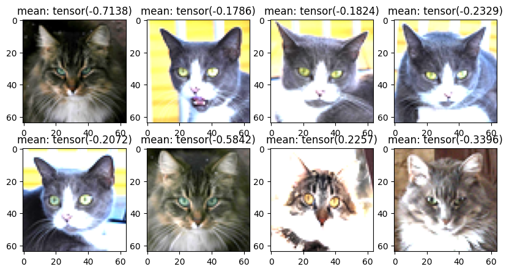

from cleanfid.inception_pytorch import fid_inception_v3inception_v3 = fid_inception_v3()_ = inception_v3.eval()
/home/ubuntu/.local/lib/python3.11/site-packages/torchvision/models/_utils.py:208: UserWarning: The parameter 'pretrained' is deprecated since 0.13 and may be removed in the future, please use 'weights' instead.
warnings.warn(
/home/ubuntu/.local/lib/python3.11/site-packages/torchvision/models/_utils.py:223: UserWarning: Arguments other than a weight enum or `None` for 'weights' are deprecated since 0.13 and may be removed in the future. The current behavior is equivalent to passing `weights=None`.
warnings.warn(msg)
from typing import Tupleclass TrajectorySet:def__init__(self, embeddings):""" Managing a set of trajectories, each of which is a sequence of embeddings. Parameters ---------- embeddings: (n_timesteps, n_samples, *embedding_dims). This assumes the first dimension is time. And it is ordered from t=0 to t=n_timesteps-1. With t=0 representing the clean data and t=n_timesteps-1 representing the noise. """self.embeddings = embeddingsself.embeddings_2d =Nonedef run_tsne(self, n_components: int=2, seed: int=0, **kwargs):"""Run t-SNE on the embeddings. """print(f"Running t-SNE on {self.embeddings.shape} embeddings...")from sklearn.manifold import TSNE tsne = TSNE(n_components=n_components, random_state=seed, **kwargs) flattened_embeddings =self.embeddings.reshape(-1, self.embeddings.shape[-1]) flattened_embeddings_2d = tsne.fit_transform(flattened_embeddings)self.embeddings_2d = flattened_embeddings_2d.reshape(self.embeddings.shape[0], self.embeddings.shape[1], -1)print(f"t-SNE done. Shape of 2D embeddings: {self.embeddings_2d.shape}")returnself.embeddings_2ddef plot_trajectories(self, n: int=10, show_figure: bool=False, noise_color: Tuple[float, float, float] = (0, 0, 1), # blue data_color: Tuple[float, float, float] = (1, 0, 0), # red figsize: tuple= (6, 6), with_ticks: bool=False, tsne_seed: int=0,**kwargs):"""Plot trajectories of some selected samples. This assumes the first dimension is time. And it is ordered from t=0 to t=n_timesteps-1. With t=0 representing the clean data and t=n_timesteps-1 representing the noise. Parameters ---------- n: int number of samples to plot figsize: tuple figure size kwargs: other keyword arguments for matplotlib.pyplot.scatter """import numpy as npimport matplotlib.pyplot as plt colors = []for t inrange(self.embeddings.shape[0]):# interpolate between noise_color and data_color factor = t / (self.embeddings.shape[0] -1) colors.append(np.array(noise_color) * factor + np.array(data_color) * (1- factor)) colors = np.array(colors)ifself.embeddings_2d isNone:ifself.embeddings.shape[2] ==2:self.embeddings_2d =self.embeddingselse:self.embeddings_2d =self.run_tsne(seed=tsne_seed) traj =self.embeddings_2d[:, :n, :] plt.figure(figsize=figsize) plt.scatter(traj[0, :n, 0], traj[0, :n, 1], s=10, alpha=0.8, c="red") # real plt.scatter(traj[-1, :n, 0], traj[-1, :n, 1], s=4, alpha=1, c="blue") # noise plt.scatter(traj[:, :n, 0], traj[:, :n, 1], s=0.5, alpha=0.7, c=colors.repeat(n, axis=0)) # "olive" plt.plot(traj[:, :n, 0], traj[:, :n, 1], c="olive", alpha=0.3) plt.legend(["Data", "Noise", "Intermediate Samples (color coded)", "Flow trajectory"])ifnot with_ticks: plt.xticks([]) plt.yticks([])if show_figure: plt.show()else: plt.close()# return the figurereturn plt.gcf()
Library code for dataset loading
from torch.utils.data import Datasetimport torchvision.transforms as transformsfrom datasets import load_datasetclass HuggingFaceDataset(Dataset):def__init__(self, dataset_path: str, transform=None):self.dataset = load_dataset(dataset_path, split="train")self.transform = transform orself.default_transformself.image_key =self.find_image_key()@propertydef default_transform(self):# ToTensor()return transforms.ToTensor()def find_image_key(self) ->str:# Check if the dataset has the "image" key# NOTE: Can exapnd this to other common keys if neededif"image"inself.dataset[0].keys():return"image"raiseKeyError("Dataset does not have an 'image' key")def__len__(self):returnlen(self.dataset)def__getitem__(self, idx): image =self.dataset[idx][self.image_key] image = image.convert("RGB") # Convert to RGB to ensure 3 channels# By default, set label to 0 to conform to current expected batch format label =0ifself.transform: image =self.transform(image)return image, label
noised_images = {}colors = {}# for t in [0, 50, 100, 200, 300, 500, 800]:torch.manual_seed(0)common_noise = torch.randn_like(real_images)for t inrange(0, 1000, 10): noised_images[t] = forward_diffusion(real_images.cpu(), torch.tensor([t]), noise_schedule, common_noise)[0] alpha_accum = noise_schedule["alphas_cumprod"][t]# interpolate between red (1,0,0) and blue (0,0,1)# small alpha_accum is blue, large is red colors[t] = (alpha_accum, 0, 1- alpha_accum)noised_images[0][0].shape
torch.Size([3, 64, 64])
noised_embeddings = {}for t in noised_images:with torch.no_grad(): noised_images[t] = resize(noised_images[t]) features = inception_v3(noised_images[t].to(device)) noised_embeddings[t] = features.cpu().numpy()
all_embeddings = np.concatenate([real_embeddings, *noised_embeddings.values()], axis=0)print(f"all_embeddings.shape: {all_embeddings.shape}")embeddings_2d = tsne.fit_transform(all_embeddings)real_embeddings_2d = embeddings_2d[:real_embeddings.shape[0]]# put them back to the original ordernoised_embeddings_2d = {}offset = real_embeddings.shape[0]for t in noised_embeddings: noised_embeddings_2d[t] = embeddings_2d[offset:offset+len(noised_embeddings[t])] offset +=len(noised_embeddings[t])# plot the real embeddings# plt.scatter(real_embeddings_2d[:, 0], real_embeddings_2d[:, 1], c="red", label="real")# show color gradient from blue to redtrajs = []for t in noised_embeddings_2d: noised_embeddings_this_t_2d = noised_embeddings_2d[t] trajs.append(noised_embeddings_this_t_2d)trajs = np.array(trajs)color_for_trajs = []for t in noised_embeddings_2d: color_for_trajs.append(colors[t])color_for_trajs = np.array(color_for_trajs)print(trajs.shape)
from typing import Uniondef pad_t_like_x(t, x):"""Function to reshape the time vector t by the number of dimensions of x. Parameters ---------- x : Tensor, shape (bs, *dim) represents the source minibatch t : FloatTensor, shape (bs) Returns ------- t : Tensor, shape (bs, number of x dimensions) Example ------- x: Tensor (bs, C, W, H) t: Vector (bs) pad_t_like_x(t, x): Tensor (bs, 1, 1, 1) """ifisinstance(t, (float, int)):return treturn t.reshape(-1, *([1] * (x.dim() -1)))class ConditionalFlowMatcher:"""Base class for conditional flow matching methods. This class implements the independent conditional flow matching methods from [1] and serves as a parent class for all other flow matching methods. It implements: - Drawing data from gaussian probability path N(t * x1 + (1 - t) * x0, sigma) function - conditional flow matching ut(x1|x0) = x1 - x0 - score function $\nabla log p_t(x|x0, x1)$ """def__init__(self, sigma: Union[float, int] =0.0):r"""Initialize the ConditionalFlowMatcher class. It requires the hyper-parameter $\sigma$. Parameters ---------- sigma : Union[float, int] """self.sigma = sigmadef compute_mu_t(self, x0, x1, t):""" Compute the mean of the probability path N(t * x1 + (1 - t) * x0, sigma), see (Eq.14) [1]. Parameters ---------- x0 : Tensor, shape (bs, *dim) represents the source minibatch x1 : Tensor, shape (bs, *dim) represents the target minibatch t : FloatTensor, shape (bs) Returns ------- mean mu_t: t * x1 + (1 - t) * x0 References ---------- [1] Improving and Generalizing Flow-Based Generative Models with minibatch optimal transport, Preprint, Tong et al. """ t = pad_t_like_x(t, x0)return t * x1 + (1- t) * x0def compute_sigma_t(self, t):""" Compute the standard deviation of the probability path N(t * x1 + (1 - t) * x0, sigma), see (Eq.14) [1]. Parameters ---------- t : FloatTensor, shape (bs) Returns ------- standard deviation sigma References ---------- [1] Improving and Generalizing Flow-Based Generative Models with minibatch optimal transport, Preprint, Tong et al. """del treturnself.sigmadef sample_xt(self, x0, x1, t, epsilon):""" Draw a sample from the probability path N(t * x1 + (1 - t) * x0, sigma), see (Eq.14) [1]. Parameters ---------- x0 : Tensor, shape (bs, *dim) represents the source minibatch x1 : Tensor, shape (bs, *dim) represents the target minibatch t : FloatTensor, shape (bs) epsilon : Tensor, shape (bs, *dim) noise sample from N(0, 1) Returns ------- xt : Tensor, shape (bs, *dim) References ---------- [1] Improving and Generalizing Flow-Based Generative Models with minibatch optimal transport, Preprint, Tong et al. """ mu_t =self.compute_mu_t(x0, x1, t) sigma_t =self.compute_sigma_t(t) sigma_t = pad_t_like_x(sigma_t, x0)return mu_t + sigma_t * epsilondef compute_conditional_flow(self, x0, x1, t, xt):""" Compute the conditional vector field ut(x1|x0) = x1 - x0, see Eq.(15) [1]. Parameters ---------- x0 : Tensor, shape (bs, *dim) represents the source minibatch x1 : Tensor, shape (bs, *dim) represents the target minibatch t : FloatTensor, shape (bs) xt : Tensor, shape (bs, *dim) represents the samples drawn from probability path pt Returns ------- ut : conditional vector field ut(x1|x0) = x1 - x0 References ---------- [1] Improving and Generalizing Flow-Based Generative Models with minibatch optimal transport, Preprint, Tong et al. """del t, xtreturn x1 - x0def sample_noise_like(self, x):return torch.randn_like(x)def sample_location_and_conditional_flow(self, x0, x1, t=None, return_noise=False):""" Compute the sample xt (drawn from N(t * x1 + (1 - t) * x0, sigma)) and the conditional vector field ut(x1|x0) = x1 - x0, see Eq.(15) [1]. Parameters ---------- x0 : Tensor, shape (bs, *dim) represents the source minibatch x1 : Tensor, shape (bs, *dim) represents the target minibatch (optionally) t : Tensor, shape (bs) represents the time levels if None, drawn from uniform [0,1] return_noise : bool return the noise sample epsilon Returns ------- t : FloatTensor, shape (bs) xt : Tensor, shape (bs, *dim) represents the samples drawn from probability path pt ut : conditional vector field ut(x1|x0) = x1 - x0 (optionally) eps: Tensor, shape (bs, *dim) such that xt = mu_t + sigma_t * epsilon References ---------- [1] Improving and Generalizing Flow-Based Generative Models with minibatch optimal transport, Preprint, Tong et al. """if t isNone: t = torch.rand(x0.shape[0]).type_as(x0)assertlen(t) == x0.shape[0], f"t has to have batch size dimension, got {len(t)}" eps =self.sample_noise_like(x0) xt =self.sample_xt(x0, x1, t, eps) ut =self.compute_conditional_flow(x0, x1, t, xt)if return_noise:return t, xt, ut, epselse:return t, xt, utdef compute_lambda(self, t):"""Compute the lambda function, see Eq.(23) [3]. Parameters ---------- t : FloatTensor, shape (bs) Returns ------- lambda : score weighting function References ---------- [4] Simulation-free Schrodinger bridges via score and flow matching, Preprint, Tong et al. """ sigma_t =self.compute_sigma_t(t)return2* sigma_t / (self.sigma**2+1e-8)
import numpy as npimport ot as potimport warningsfrom functools import partialclass OTPlanSampler:"""OTPlanSampler implements sampling coordinates according to an OT plan (wrt squared Euclidean cost) with different implementations of the plan calculation."""def__init__(self, method: str, reg: float=0.05, reg_m: float=1.0, normalize_cost: bool=False, num_threads: Union[int, str] =1, warn: bool=True, ) ->None:"""Initialize the OTPlanSampler class. Parameters ---------- method: str choose which optimal transport solver you would like to use. Currently supported are ["exact", "sinkhorn", "unbalanced", "partial"] OT solvers. reg: float, optional regularization parameter to use for Sinkhorn-based iterative solvers. reg_m: float, optional regularization weight for unbalanced Sinkhorn-knopp solver. normalize_cost: bool, optional normalizes the cost matrix so that the maximum cost is 1. Helps stabilize Sinkhorn-based solvers. Should not be used in the vast majority of cases. num_threads: int or str, optional number of threads to use for the "exact" OT solver. If "max", uses the maximum number of threads. warn: bool, optional if True, raises a warning if the algorithm does not converge """# ot_fn should take (a, b, M) as arguments where a, b are marginals and# M is a cost matrixif method =="exact":self.ot_fn = partial(pot.emd, numThreads=num_threads)elif method =="sinkhorn":self.ot_fn = partial(pot.sinkhorn, reg=reg)elif method =="unbalanced":self.ot_fn = partial(pot.unbalanced.sinkhorn_knopp_unbalanced, reg=reg, reg_m=reg_m)elif method =="partial":self.ot_fn = partial(pot.partial.entropic_partial_wasserstein, reg=reg)else:raiseValueError(f"Unknown method: {method}")self.reg = regself.reg_m = reg_mself.normalize_cost = normalize_costself.warn = warndef get_map(self, x0, x1):"""Compute the OT plan (wrt squared Euclidean cost) between a source and a target minibatch. Parameters ---------- x0 : Tensor, shape (bs, *dim) represents the source minibatch x1 : Tensor, shape (bs, *dim) represents the source minibatch Returns ------- p : numpy array, shape (bs, bs) represents the OT plan between minibatches """ a, b = pot.unif(x0.shape[0]), pot.unif(x1.shape[0])if x0.dim() >2: x0 = x0.reshape(x0.shape[0], -1)if x1.dim() >2: x1 = x1.reshape(x1.shape[0], -1) x1 = x1.reshape(x1.shape[0], -1) M = torch.cdist(x0, x1) **2ifself.normalize_cost: M = M / M.max() # should not be normalized when using minibatches p =self.ot_fn(a, b, M.detach().cpu().numpy())ifnot np.all(np.isfinite(p)):print("ERROR: p is not finite")print(p)print("Cost mean, max", M.mean(), M.max())print(x0, x1)if np.abs(p.sum()) <1e-8:ifself.warn: warnings.warn("Numerical errors in OT plan, reverting to uniform plan.") p = np.ones_like(p) / p.sizereturn pdef sample_map(self, pi, batch_size, replace=True):r"""Draw source and target samples from pi $(x,z) \sim \pi$ Parameters ---------- pi : numpy array, shape (bs, bs) represents the source minibatch batch_size : int represents the OT plan between minibatches replace : bool represents sampling or without replacement from the OT plan Returns ------- (i_s, i_j) : tuple of numpy arrays, shape (bs, bs) represents the indices of source and target data samples from $\pi$ """ p = pi.flatten() p = p / p.sum() choices = np.random.choice( pi.shape[0] * pi.shape[1], p=p, size=batch_size, replace=replace )return np.divmod(choices, pi.shape[1])def sample_plan(self, x0, x1, replace=True):r"""Compute the OT plan $\pi$ (wrt squared Euclidean cost) between a source and a target minibatch and draw source and target samples from pi $(x,z) \sim \pi$ Parameters ---------- x0 : Tensor, shape (bs, *dim) represents the source minibatch x1 : Tensor, shape (bs, *dim) represents the source minibatch replace : bool represents sampling or without replacement from the OT plan Returns ------- x0[i] : Tensor, shape (bs, *dim) represents the source minibatch drawn from $\pi$ x1[j] : Tensor, shape (bs, *dim) represents the source minibatch drawn from $\pi$ """ pi =self.get_map(x0, x1) i, j =self.sample_map(pi, x0.shape[0], replace=replace)return x0[i], x1[j]def sample_plan_with_labels(self, x0, x1, y0=None, y1=None, replace=True):r"""Compute the OT plan $\pi$ (wrt squared Euclidean cost) between a source and a target minibatch and draw source and target labeled samples from pi $(x,z) \sim \pi$ Parameters ---------- x0 : Tensor, shape (bs, *dim) represents the source minibatch x1 : Tensor, shape (bs, *dim) represents the target minibatch y0 : Tensor, shape (bs) represents the source label minibatch y1 : Tensor, shape (bs) represents the target label minibatch replace : bool represents sampling or without replacement from the OT plan Returns ------- x0[i] : Tensor, shape (bs, *dim) represents the source minibatch drawn from $\pi$ x1[j] : Tensor, shape (bs, *dim) represents the target minibatch drawn from $\pi$ y0[i] : Tensor, shape (bs, *dim) represents the source label minibatch drawn from $\pi$ y1[j] : Tensor, shape (bs, *dim) represents the target label minibatch drawn from $\pi$ """ pi =self.get_map(x0, x1) i, j =self.sample_map(pi, x0.shape[0], replace=replace)return ( x0[i], x1[j], y0[i] if y0 isnotNoneelseNone, y1[j] if y1 isnotNoneelseNone, )def sample_trajectory(self, X):"""Compute the OT trajectories between different sample populations moving from the source to the target distribution. Parameters ---------- X : Tensor, (bs, times, *dim) different populations of samples moving from the source to the target distribution. Returns ------- to_return : Tensor, (bs, times, *dim) represents the OT sampled trajectories over time. """ times = X.shape[1] pis = []for t inrange(times -1): pis.append(self.get_map(X[:, t], X[:, t +1])) indices = [np.arange(X.shape[0])]for pi in pis: j = []for i in indices[-1]: j.append(np.random.choice(pi.shape[1], p=pi[i] / pi[i].sum())) indices.append(np.array(j)) to_return = []for t inrange(times): to_return.append(X[:, t][indices[t]]) to_return = np.stack(to_return, axis=1)return to_returnclass ExactOptimalTransportConditionalFlowMatcher(ConditionalFlowMatcher):"""Child class for optimal transport conditional flow matching method. This class implements the OT-CFM methods from [1] and inherits the ConditionalFlowMatcher parent class. It overrides the sample_location_and_conditional_flow. """def__init__(self, sigma: Union[float, int] =0.0):r"""Initialize the ConditionalFlowMatcher class. It requires the hyper-parameter $\sigma$. Parameters ---------- sigma : Union[float, int] ot_sampler: exact OT method to draw couplings (x0, x1) (see Eq.(17) [1]). """super().__init__(sigma)self.ot_sampler = OTPlanSampler(method="exact")def sample_location_and_conditional_flow(self, x0, x1, t=None, return_noise=False):r""" Compute the sample xt (drawn from N(t * x1 + (1 - t) * x0, sigma)) and the conditional vector field ut(x1|x0) = x1 - x0, see Eq.(15) [1] with respect to the minibatch OT plan $\Pi$. Parameters ---------- x0 : Tensor, shape (bs, *dim) represents the source minibatch x1 : Tensor, shape (bs, *dim) represents the target minibatch (optionally) t : Tensor, shape (bs) represents the time levels if None, drawn from uniform [0,1] return_noise : bool return the noise sample epsilon Returns ------- t : FloatTensor, shape (bs) xt : Tensor, shape (bs, *dim) represents the samples drawn from probability path pt ut : conditional vector field ut(x1|x0) = x1 - x0 (optionally) epsilon : Tensor, shape (bs, *dim) such that xt = mu_t + sigma_t * epsilon References ---------- [1] Improving and Generalizing Flow-Based Generative Models with minibatch optimal transport, Preprint, Tong et al. """ x0, x1 =self.ot_sampler.sample_plan(x0, x1)returnsuper().sample_location_and_conditional_flow(x0, x1, t, return_noise)def guided_sample_location_and_conditional_flow(self, x0, x1, y0=None, y1=None, t=None, return_noise=False ):r""" Compute the sample xt (drawn from N(t * x1 + (1 - t) * x0, sigma)) and the conditional vector field ut(x1|x0) = x1 - x0, see Eq.(15) [1] with respect to the minibatch OT plan $\Pi$. Parameters ---------- x0 : Tensor, shape (bs, *dim) represents the source minibatch x1 : Tensor, shape (bs, *dim) represents the target minibatch y0 : Tensor, shape (bs) (default: None) represents the source label minibatch y1 : Tensor, shape (bs) (default: None) represents the target label minibatch (optionally) t : Tensor, shape (bs) represents the time levels if None, drawn from uniform [0,1] return_noise : bool return the noise sample epsilon Returns ------- t : FloatTensor, shape (bs) xt : Tensor, shape (bs, *dim) represents the samples drawn from probability path pt ut : conditional vector field ut(x1|x0) = x1 - x0 (optionally) epsilon : Tensor, shape (bs, *dim) such that xt = mu_t + sigma_t * epsilon References ---------- [1] Improving and Generalizing Flow-Based Generative Models with minibatch optimal transport, Preprint, Tong et al. """ x0, x1, y0, y1 =self.ot_sampler.sample_plan_with_labels(x0, x1, y0, y1)if return_noise: t, xt, ut, eps =super().sample_location_and_conditional_flow(x0, x1, t, return_noise)return t, xt, ut, y0, y1, epselse: t, xt, ut =super().sample_location_and_conditional_flow(x0, x1, t, return_noise)return t, xt, ut, y0, y1
2024-12-02 23:00:43.531809: I tensorflow/core/util/port.cc:153] oneDNN custom operations are on. You may see slightly different numerical results due to floating-point round-off errors from different computation orders. To turn them off, set the environment variable `TF_ENABLE_ONEDNN_OPTS=0`.
2024-12-02 23:00:43.543894: E external/local_xla/xla/stream_executor/cuda/cuda_fft.cc:485] Unable to register cuFFT factory: Attempting to register factory for plugin cuFFT when one has already been registered
2024-12-02 23:00:43.556582: E external/local_xla/xla/stream_executor/cuda/cuda_dnn.cc:8454] Unable to register cuDNN factory: Attempting to register factory for plugin cuDNN when one has already been registered
2024-12-02 23:00:43.560354: E external/local_xla/xla/stream_executor/cuda/cuda_blas.cc:1452] Unable to register cuBLAS factory: Attempting to register factory for plugin cuBLAS when one has already been registered
2024-12-02 23:00:43.569758: I tensorflow/core/platform/cpu_feature_guard.cc:210] This TensorFlow binary is optimized to use available CPU instructions in performance-critical operations.
To enable the following instructions: AVX2 AVX512F AVX512_VNNI FMA, in other operations, rebuild TensorFlow with the appropriate compiler flags.
2024-12-02 23:00:44.333698: W tensorflow/compiler/tf2tensorrt/utils/py_utils.cc:38] TF-TRT Warning: Could not find TensorRT
Visualize flow matching plan
FM = ConditionalFlowMatcher(sigma=0)
from tqdm import tqdmdef generate_trajectories(FM, num_timesteps=10, n=32, seed=0): x_clean = real_images[:n]# noisy data torch.manual_seed(seed) x_noisy = torch.randn_like(x_clean)# Sample multiple timesteps to visualize flow progression t_grid = torch.linspace(0, 1, num_timesteps) x_ts = []# u_ts = []for i, t inenumerate(t_grid): t_batch = t.repeat(x_clean.shape[0]) np.random.seed(seed) t, x_t, u_t = FM.sample_location_and_conditional_flow(x0=x_clean, x1=x_noisy, t=t_batch) x_ts.append(x_t.detach().cpu().numpy())if i ==0:print("x_t images mean (t=0):", x_t.mean(), "x_clean images mean:", x_clean.mean())if i ==len(t_grid) -1:print("x_t images mean (t=1):", x_t.mean(), "x_noisy images mean:", x_noisy.mean())# u_ts.append(u_t.detach().cpu().numpy())# First, extract the embeddingsprint("Extracting embeddings...") x_ts_embeddings = [] resize = transforms.Resize((224, 224))def to_tensor(x):return torch.from_numpy(x) inception_v3.eval()with torch.no_grad():for x_t in tqdm(x_ts): x_ts_embeddings.append(inception_v3(resize(to_tensor(x_t).to(device))).cpu().numpy()) all_x_embeddings = np.array(x_ts_embeddings) traj_set = TrajectorySet(all_x_embeddings)return traj_settraj_set = generate_trajectories(FM, num_timesteps=100, n=16)print("clean data mean:", traj_set.embeddings[0].mean())
x_t images mean (t=0): tensor(-0.2593) x_clean images mean: tensor(-0.2593)
x_t images mean (t=1): tensor(-0.0035) x_noisy images mean: tensor(-0.0035)
Extracting embeddings...
# display x_clean# Do a subplot with 2 by 4 layoutfig, axs = plt.subplots(2, 4, figsize=(10, 5))for i inrange(2):for j inrange(4): axs[i, j].imshow((x_clean[i *4+ j].permute(1, 2, 0) +1)) axs[i, j].set_title("mean: "+str(x_clean[i *4+ j].mean()))plt.show()# display x_tfig, axs = plt.subplots(2, 4, figsize=(10, 5))for i inrange(2):for j inrange(4): axs[i, j].imshow((x_t[i *4+ j].permute(1, 2, 0) +1)) axs[i, j].set_title("mean: "+str(x_t[i *4+ j].mean()))plt.show()
Clipping input data to the valid range for imshow with RGB data ([0..1] for floats or [0..255] for integers).
Clipping input data to the valid range for imshow with RGB data ([0..1] for floats or [0..255] for integers).
Clipping input data to the valid range for imshow with RGB data ([0..1] for floats or [0..255] for integers).
Clipping input data to the valid range for imshow with RGB data ([0..1] for floats or [0..255] for integers).
Clipping input data to the valid range for imshow with RGB data ([0..1] for floats or [0..255] for integers).
Clipping input data to the valid range for imshow with RGB data ([0..1] for floats or [0..255] for integers).
Clipping input data to the valid range for imshow with RGB data ([0..1] for floats or [0..255] for integers).
Clipping input data to the valid range for imshow with RGB data ([0..1] for floats or [0..255] for integers).

Clipping input data to the valid range for imshow with RGB data ([0..1] for floats or [0..255] for integers).
Clipping input data to the valid range for imshow with RGB data ([0..1] for floats or [0..255] for integers).
Clipping input data to the valid range for imshow with RGB data ([0..1] for floats or [0..255] for integers).
Clipping input data to the valid range for imshow with RGB data ([0..1] for floats or [0..255] for integers).
Clipping input data to the valid range for imshow with RGB data ([0..1] for floats or [0..255] for integers).
Clipping input data to the valid range for imshow with RGB data ([0..1] for floats or [0..255] for integers).
Clipping input data to the valid range for imshow with RGB data ([0..1] for floats or [0..255] for integers).
Clipping input data to the valid range for imshow with RGB data ([0..1] for floats or [0..255] for integers).